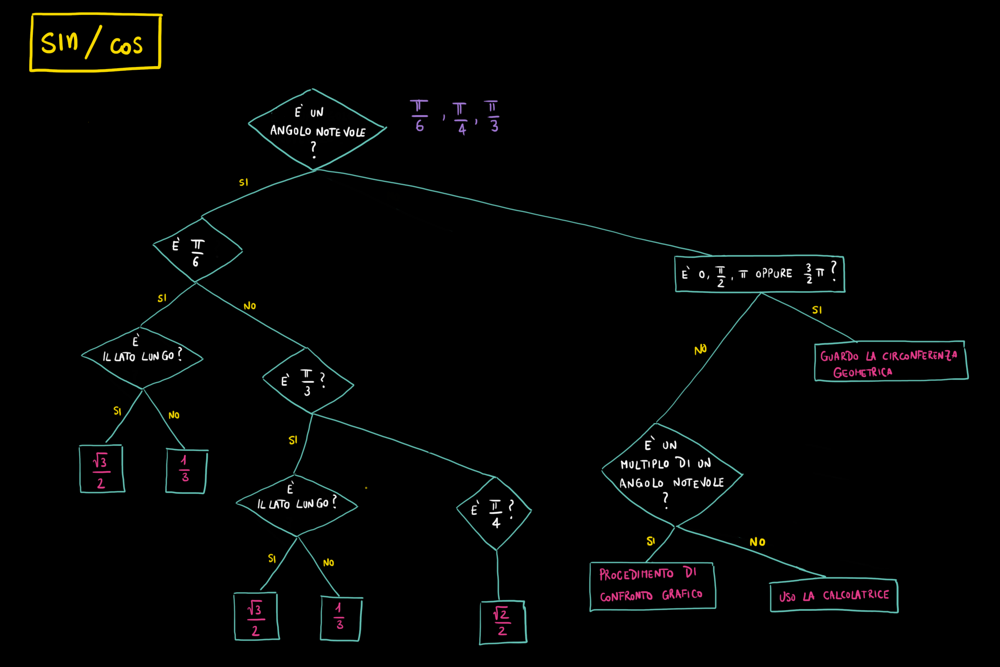

Compiti per casa
Argomenti svolti
1) Seno, coseno, tangente: definizione geometrica
[Par. 12.2, 12.3, pag. da 668 a 676]
2) Gradi v.s. Radianti
[Par. 2.1, pag. da 664 a 666]
2.1) Definizioni di grado e radiante
2.2) Un angolo di riferimento: l'angolo giro
2.3) Passare da gradi a radianti (e viceversa)
3) Visualizzazione delle funzioni trigonometriche
[Par. 12.2, pag. da 668 a 669]
3.1) Visualizzazione del seno
3.2) Visualizzazione del coseno
3.3) Visualizzazione del tangente
4) Archi associati
[Par. 12.6, 12.7, pag. da 680 a 683]
Trascinando il punto nero sulla circonfereza potete visualizzare seno, coseno e tangente dell'angolo che vi interessa e confrontarli con seno, coseno e tangente dell'angolo di cui è multiplo.
Potete usare questo strumento per risolvere gli esercizi che seguono.
Diagramma di flusso per stabilire il valore di seno e coseno

Esercizio 1
Svolgere la seguente espressione
\[
\dfrac{\left[cos\left(\dfrac{3}{4}\pi\right) - sin\left(\dfrac{2}{3}\pi\right)\right] \cdot tan\left(\dfrac{3}{4}\pi\right)}{cos\left(\dfrac{11}{6}\pi\right) + cos\left(\dfrac{5}{3}\pi\right)}
\]
Soluzione: \(\quad \dfrac{1}{2}\,\left(\sqrt{2} + \sqrt{3}\right)\,\left(\sqrt{3} - 1\right)\)
Esercizio 2
Confrontate i risultati che ottenete svolgendo le seguenti espressioni:
-
\(
\left[sin\left(\dfrac{7}{4}\pi\right)\right]^2 + \left[cos\left(\dfrac{7}{4}\pi\right)\right]^2
\)
-
\(
\left[sin\left(\dfrac{\pi}{2}\right)\right]^2 + \left[cos\left(\dfrac{\pi}{2}\right)\right]^2
\)
-
\(
\left[sin\left(\dfrac{7}{6}\pi\right)\right]^2 + \left[cos\left(\dfrac{7}{6}\pi\right)\right]^2
\)
-
\(
\left[sin\left(\pi\right)\right]^2 + \left[cos\left(\pi\right)\right]^2
\)
-
\(
\left[sin\left(\dfrac{4}{3}\pi\right)\right]^2 + \left[cos\left(\dfrac{4}{3}\pi\right)\right]^2
\)
Secondo voi quale valore assume in generale l'espressione
\[
\left[sin\left(\alpha\right)\right]^2 + \left[cos\left(\alpha\right)\right]^2
\]
dove \(\alpha\) è un qualsiasi angolo?
Sapreste spiegare perché?
Esercizio 3
Confrontate i risultati che ottenete svolgendo le seguenti espressioni:
-
\(
\dfrac{sin\left(\dfrac{5}{4}\pi\right)}{cos\left(\dfrac{5}{4}\pi\right)} - tan\left(\dfrac{5}{4}\pi\right)
\)
-
\(
\dfrac{sin\left(\dfrac{\pi}{3}\right)}{cos\left(\dfrac{\pi}{3}\right)} - tan\left(\dfrac{\pi}{3}\right)
\)
-
\(
\dfrac{sin\left(2\pi\right)}{cos\left(2\pi\right)} - tan\left(2\pi\right)
\)
-
\(
\dfrac{sin\left(\dfrac{7}{6}\pi\right)}{cos\left(\dfrac{7}{6}\pi\right)} - tan\left(\dfrac{7}{6}\pi\right)
\)
Secondo voi quale valore assume in generale l'espressione
\[
\dfrac{sin\left(\alpha\right)}{cos\left(\alpha\right)} - tan\left(\alpha\right)
\]
dove \(\alpha\) è un qualsiasi angolo?
Sapreste spiegare perché?